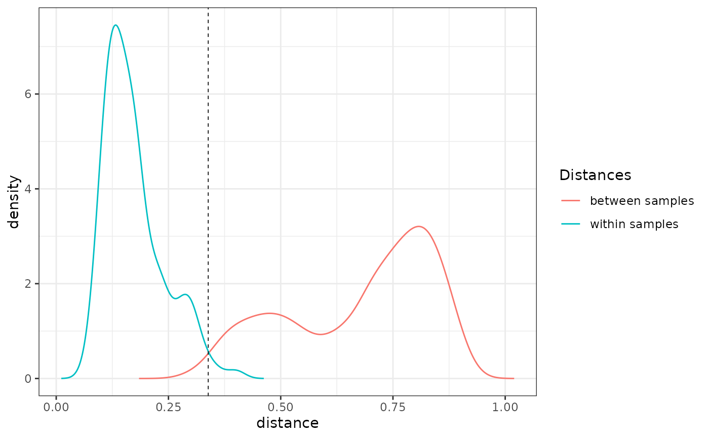
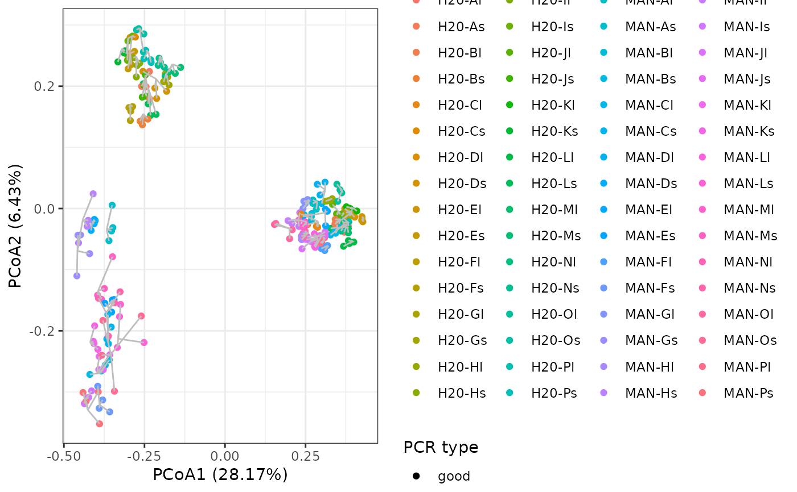
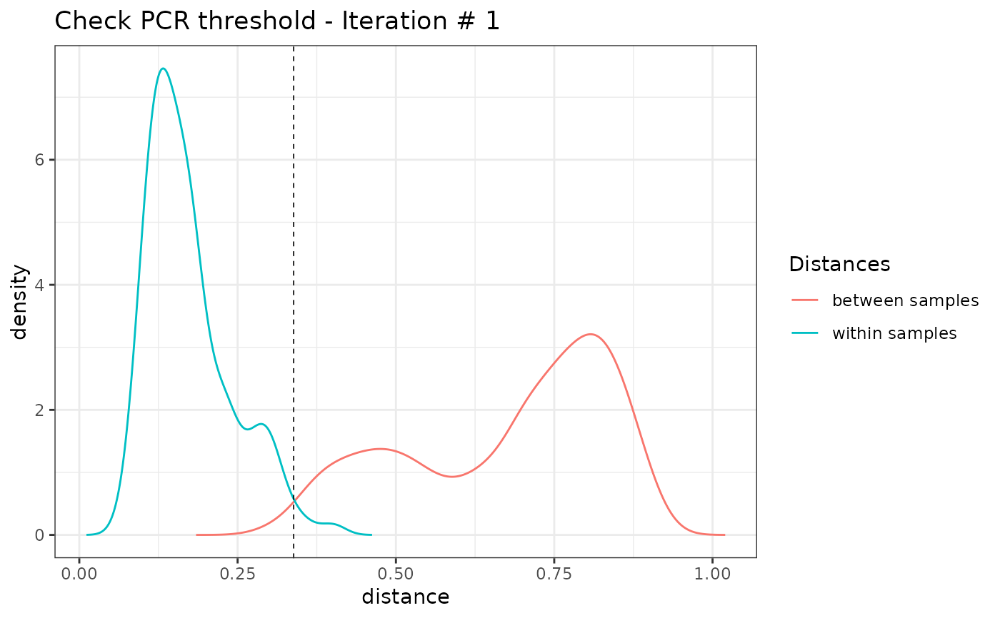
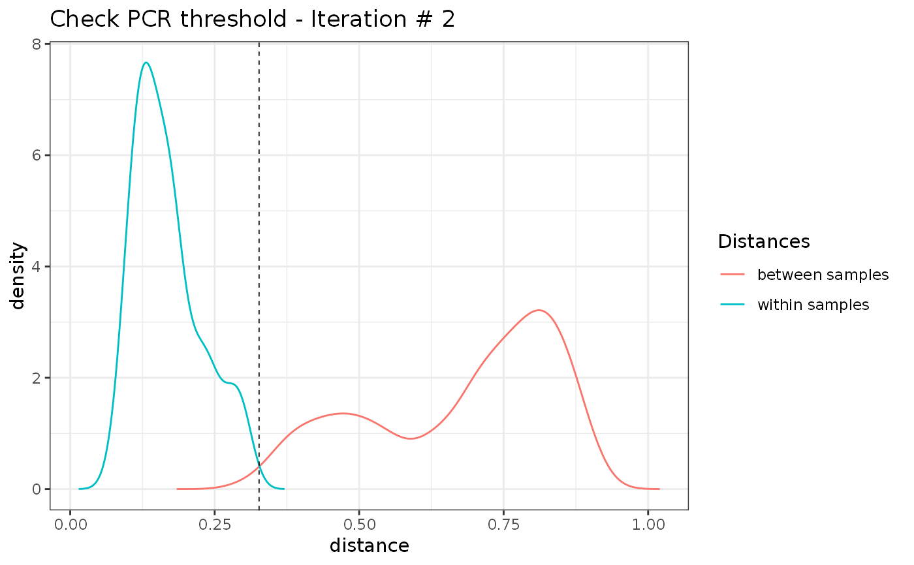
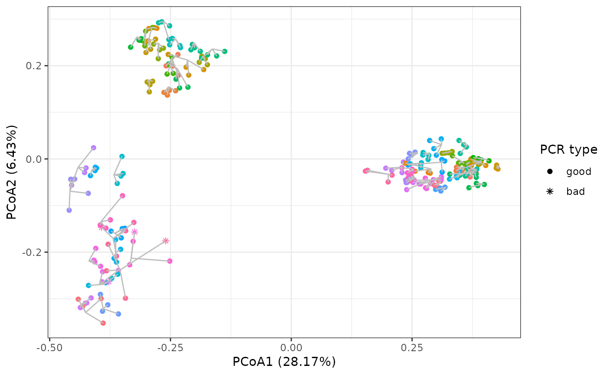

Detecting failed PCRs, i.e. PCR replicate outliers based on PCR similarity in composition of MOTUs.
pcrslayer(
metabarlist,
replicates = NULL,
method = "centroid",
FUN = FUN_pcrdist_bray_freq,
thresh.method = "intersect",
output_col = "functional_pcr",
plot = T
)
pcr_within_between(
metabarlist,
replicates = NULL,
FUN = FUN_pcrdist_bray_freq,
method = "centroid"
)
FUN_pcrdist_bray_freq(reads_table)
FUN_pcrdist_coa_freq(reads_table)
check_pcr_thresh(wthn.btwn, thresh.method = "intersect")
pcr_threshold_estimate(wthn.btwn, thresh.method = "intersect")
check_pcr_repl(metabarlist, replicates = NULL, groups = NULL, funcpcr = NULL)a metabarlist object
a vector corresponding to the sample names to which
pcr replicates belongs. Default is the `sample_id` column of the `pcrs` table
from the metabarlist object.
a character indicating which method should be used to identify PCR outliers. Can be
"centroid" or "pairwise". Default is "centroid".
a function for computing distances between replicates. Default is Bray-Curtis distances on MOTU relative abundance table.
a character indicating which method should be used to define the filtering
threshold. Can be "intersect" or "mode".
a character string for the column name in the `pcrs` table, in which the result will be stored. Default is "functional_pcr"
a boolean vector indicating whether dissimilarity distribution should be plotted.
Default is TRUE
a table `reads` from a metabarlist object
an ouput from pcr_within_between
a column name in the `pcrs` table corresponding to a factor giving the groups from which the graphical colorscheme is drawn.
a boolean vector indicating whether PCRs are functional (TRUE) or not.
The pcrslayer function returns a metabarlist with a new boolean column vector of name
`output_col` in the `pcrs` table indicating whether the PCR is functional (TRUE) or
or failed (FALSE).
The pcr_within_between function returns a list of dw and db dissimilarities.
The check_pcr_thresh and check_pcr_repl functions return ggplot objects.
The pcrslayer function identifies potential non-functional PCR reactions based on their reproducibility. It compares the dissimilarities in MOTU composition within a biological sample (i.e. between PCR replicates, hereafter dw) vs. between biological samples (hereafter db). It relies on the assumption that PCR replicates from the same biological sample should be more similar than two different biological samples (dw < db). Two methods for computing dw and db are available.
With method "centroid", both dw and db distances are based on the centroid of samples. More specifically, a centroid community of each sample is built by computing the average MOTU abundances of the sample's pcr replicates. Then dw is defined as the distance between pcr replicates and their corresponding centroid, while db is defined as the distances between centroids of different samples. A PCR replicate having a dw above a given dissimilarity threshold tresh is considered as an outlier, i.e. too distant from its associated average MOTU community (method="centroid"). If only one single PCR replicate is representative of a biological sample after this trimming, it is also considered as a failed PCR. The process is repeated iteratively to recompute the sample centroid, as well as dw and db until no more PCRs are excluded from the analysis.
With method "pairwise", pairwise distances between all PCR replicates are computed and then classified into dw or db depending on the pair considered. A PCR replicate having a an average dw above a given dissimilarity threshold tresh is considered as an outlier, i.e. too distant from its associated replicates (method="pairwise"). If only one single PCR replicate is representative of a biological sample after this trimming, it is also considered as a failed PCR. In this case, no iterations are done.
For both methods, the user is free to chose their own distance metric and whether distances should be computed on relative abundances or true abundances, through the argument FUN. Two methods are currently pre-encoded:
FUN_pcrdist_bray_freq computes Bray-Curtis distances on MOTU relative abundances
FUN_pcrdist_coa_freq computes Euclidean distances between PCRs from a Correspondance Analysis on MOTU relative abundances
.
The pcr_within_between function is part of pcrslayer, and computes dissimilarities in MOTU composition within a biological sample dw and between biological samples db following either method="centroid" or method="pairwise" methods.
The threshold tresh is defined automatically with two alternative methods. Either it is the intersection of dw and db distributions (tresh.method="intersect"). Alternatively, it is the mode of the db distribution (tresh.method="mode").
The check_pcr_thresh function enables visualisation of dw and db distributions. Function check_pcr_repl enables visualization of PCR replicate dissimilarity patterns in a NMDS ordination and distance from their average OTU community.
The check_pcr_repl function enables visualisation of dissimilarity patterns across all PCRs while showing PCR replicate centroids through a Principal Coordinate Analysis (PCoA) based on Bray-Curtis dissimilarities.
pcrslayer: Detect failed PCRs, i.e. PCR outliers in a metabarlist object.
pcr_within_between: Computes a list of dissimilarities in OTU composition within a biological sample dw and between biological samples db.
FUN_pcrdist_bray_freq: Computes Bray-Curtis distances between pcrs standardised by the total number of reads.
FUN_pcrdist_coa_freq: Computes eclidean distances from a PCoA ordination between pcrs standardised by the total number of reads.
check_pcr_thresh: Vizualize dw and db dissimilarities and the threshold (defined automatically) above which pcr replicates are considered as too dissimilar.
pcr_threshold_estimate: Estimates the cutoff above which a pcr is considered as an outlier.
check_pcr_repl: Vizualize pcrs dissimilarity patterns and pcr replicates centroids.
tagjumpslayer, contaslayer for other data curation procedures.
# \donttest{
library(ggplot2)
data(soil_euk)
## Consider only biological samples with # reads > 0
soil_euk_sub <- subset_metabarlist(soil_euk,
"pcrs",
soil_euk$pcrs$type == "sample" &
rowSums(soil_euk$reads>0))
## Visualisation of within vs. between sample dissimilarities
soil_euk_sub_wb <- pcr_within_between(soil_euk_sub)
check_pcr_thresh(soil_euk_sub_wb, thresh.method = "intersect")

## Visualisation of replicates through PCoA
# create grouping factor according to habitat and material
soil_euk_sub$pcrs$habitat_material <- soil_euk_sub$pcrs$sample_id
idx <- match(levels(soil_euk_sub$pcrs$habitat_material), rownames(soil_euk_sub$samples))
levels(soil_euk_sub$pcrs$habitat_material) <- paste(soil_euk_sub$samples$Habitat[idx],
soil_euk_sub$samples$Material[idx],
sep = " | ")
# visualise dissimilarity patterns
mds <- check_pcr_repl(soil_euk_sub, groups = soil_euk_sub$pcrs$habitat_material)
mds + labs(color = "sample type")

# identify failed PCRs
soil_euk_sub2 <- pcrslayer(soil_euk_sub)
#> [1] "Iteration 1"

#> [1] "Iteration 2"

tail(colnames(soil_euk_sub2$pcrs))
#> [1] "project" "sample_id" "type" "control_type"
#> [5] "habitat_material" "functional_pcr"
length(which(soil_euk_sub2$pcrs$functional_pcr == FALSE))
#> [1] 4
# define a color vector that corresponds to the different habitat types. Should be named.
mds <- check_pcr_repl(soil_euk_sub2,
groups = soil_euk_sub2$pcrs$habitat_material,
funcpcr = soil_euk_sub2$pcrs$functional_pcr)
mds + guides(color = FALSE)
#> Warning: `guides(<scale> = FALSE)` is deprecated. Please use `guides(<scale> = "none")` instead.

# }